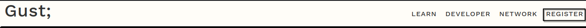
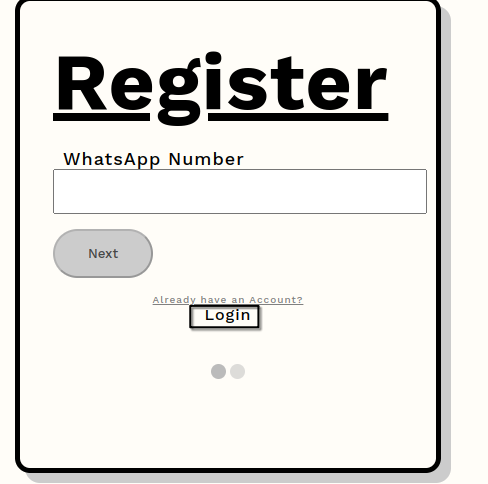
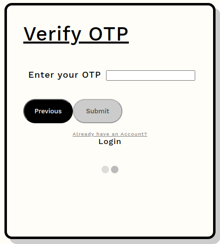

Create and Deploy your First Smart Contract
Hi Awesome Dev, Welcome.
This is a short guidance on how you can create a smart contract with Gustavo language,
and deploy it to the Gust Blockchain.
Step 1: You need a Gustavo Wallet
If you are completely new to Gustavo and you have not interacted with this platform,
simply head to the top navigation bar.
Click on Register

If you have a Wallet the simply click on sign up at the bottom of the sign up form.

Verify with the OTP that was sent to your whatsapp number, and you are all set.

Next we need to load our wallet with some test feucet, so we can continue with the task at hand.
Step 2: You need to install Gustavo package
Step 3: Next we start with drafting a simple smart contract 😄
Here comes the part you possibly been waiting for, interacting with a smart contract.
Open up the hello-world project in your favorite editor (we like VSCode).
Smart contracts are written in a language called Gustavo.
It is what we will use to write our HelloWorld.gus smart contract.
1. Navigate to the “contracts” folder and create a new file called HelloWorld.gus
2. Below is a sample Hello World smart contract from the Gust Blockchain that we will be using for this tutorial.
Copy and paste in the contents below into your HelloWorld.gus file,
and be sure to read the comments to understand what this contract does:
{{ smartContractCode }}
Notice that the file that we edited is named HelloWorld.gus
and we have updated the code inside with a simple function called SimpleTransaction.
It is good practice that the name of the function matches the file name.
let's rename the file from HelloWorld.gus to SimpleTransaction.gus.
Step 4: Now your contract is ready to be deployed
Let's first update the fields below, so that the amount being sent goes to a specific receiver
and make sure the value is also specified.
Simply click the button below and Run the code.